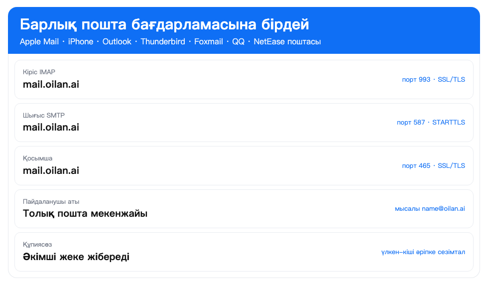
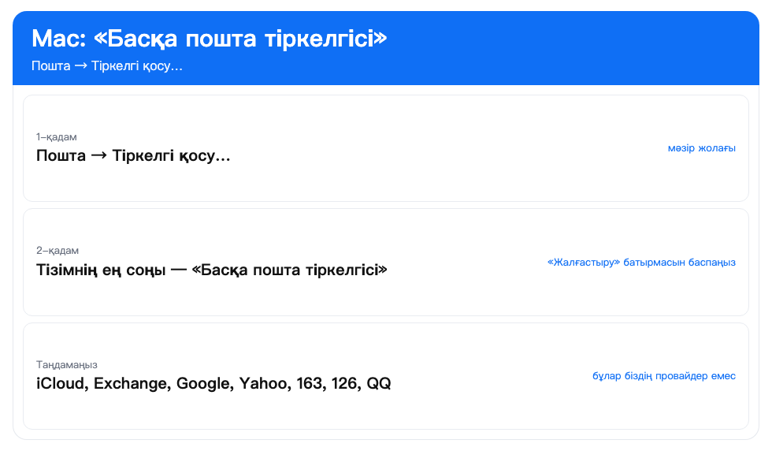
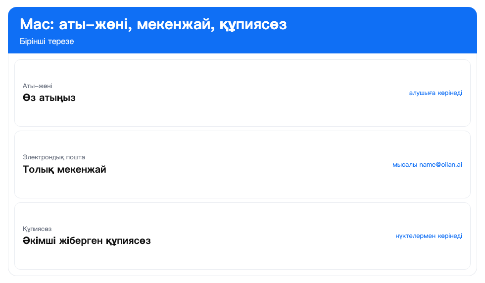
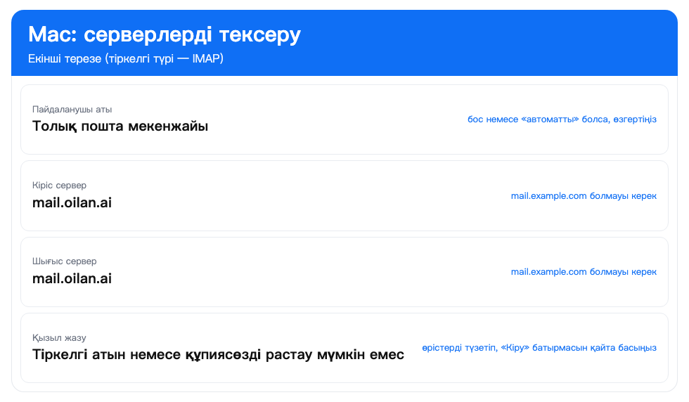

Бұл нұсқаулық @oilan.ai поштасын компьютерде
және телефонда қалай алуға және жіберуге болатынын түсіндіреді.
Нұсқаулықта құпиясөз жоқ. Пошта мекенжайы мен құпиясөзді сізге әкімші
жеке жібереді. Тек өз тіркелгіңізге кіріңіз.
Қытай тіліндегі нұсқасы: oilan-ai.zh.pdf, осы
қалтада.
1. Сіздің тіркелгіңіз
Пошта мекенжайы: толық мекенжай, мысалы
name@oilan.ai. Бұл нұсқаулықта тізім жоқ; мекенжай
әкімші жеке жіберген мекенжаймен дәл сәйкес болуы керек.
Пайдаланушы аты: әр кіргенде толық мекенжай жазылады, тек аты-жөнін
жазу жеткіліксіз.
Құпиясөз: бұл нұсқаулықта жоқ, оны әкімші жеке жібереді. Құпиясөз
үлкен-кіші әріпке сезімтал, басында және соңында бос орын болмауы
керек.
Құпиясөзді ұмытсаңыз немесе әріптесіңіздің хатын көру қажет болса,
әкімшіге хабарласыңыз. Басқа адамның құпиясөзімен кірмеңіз.
2. Сервер параметрлері
Барлық клиент бірдей параметрді пайдаланады: Apple Mail, iPhone /
iPad, Outlook, Thunderbird, Foxmail, QQ поштасы, NetEase поштасы. «Басқа
пошта» немесе IMAP таңдаңыз; QQ нөмірімен, 163 немесе NetEase
тіркелгісімен тікелей кірмеңіз.
Мақсаты
Хост
Порт
Шифрлау
Кіріс IMAP
mail.oilan.ai
993
SSL/TLS
Шығыс SMTP
mail.oilan.ai
587
STARTTLS
Шығыс SMTP (қосымша)
mail.oilan.ai
465
SSL/TLS

Барлық клиентке бірдей бес
өріс
Пайдаланушы аты ретінде толық пошта мекенжайы жазылады.
Шығыс поштада «SMTP аутентификациясы» қосулы болуы керек.
Порт пен шифрлау жұп болады: 993 — SSL/TLS, 587 — STARTTLS, 465 —
SSL/TLS.
Сертификат атауы *.oilan.ai. Жүйе сенім сұраса,
атауын тексеріп, жалғастырыңыз.
Тізімнің ең соңындағы «Басқа пошта тіркелгісі» тармағын таңдаңыз.
iCloud, Microsoft Exchange, Google, Yahoo, AOL, 163, 126 немесе QQ
поштасын таңдамаңыз. «Жалғастыру» батырмасын баспаңыз: ол мекенжай
бойынша провайдерді болжайды да, қателесуі мүмкін.

Тізімнің ең соңы — «Басқа пошта
тіркелгісі»
Аты-жөнін, толық мекенжайды және әкімші жіберген құпиясөзді енгізіп,
«Кіру» батырмасын басыңыз.

Аты-жөні, мекенжай, құпиясөз
Келесі бетте тіркелгі түрі IMAP болып қалады. Кіріс және шығыс
сервер mail.example.com болып тұрса, кіру сәтсіз болады
және «Тіркелгі атын немесе құпиясөзді растау мүмкін емес» деген қызыл
жазу шығады.

Сервер mail.example.com болса, кіру
сәтсіз болады
Мына төрт өрісті өзгертіңіз:
Өріс
Мәні
Электрондық пошта мекенжайы
Сіздің толық мекенжайыңыз
Пайдаланушы аты
Сол толық мекенжай; бос немесе «автоматты» болса, өзгертіңіз
Кіріс сервер
mail.oilan.ai
Шығыс сервер
mail.oilan.ai
Содан кейін көк «Кіру» батырмасын басыңыз. Экрандағы қызыл жазу —
mail.example.com тұрған кездегі ескі ескерту; өрістер
дұрыс болса, ол кетеді.
Тіркелгі сол жақ бағанда пайда болса, хат алуға және жіберуге
болады.